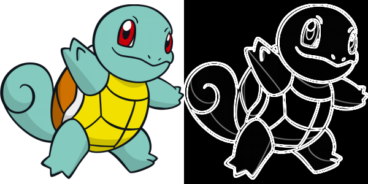

Sobel
Filtre de détection de contours.
Détail du Projet
En juillet, j'ai demandé à mon référent pédagogique si je pouvais avoir quelque chose à faire en parallèle de ma recherche de stage, pour m'entraîner en C et découvrir de nouvelles notions. Il m'a donc conseiller de programmer un filtre de Sobel. Ce projet fut réalisé en 2 après midi.
Le filtre de Sobel est un algorithme de détection de contours, qui utilise des convolutions de matrice. Mon programme parse l'image choisie -Cette dernière doit être au format ppm P3-, et l'injecte dans une matrice. Chaque pixel est converti en une moyenne de valeur, puis mon algorithme applique la matrice de convolution verticale Gy puis horizontale Gx (voir Wiki). La matrice ainsi obtenu est converti en pixel teinte de gris entre 0 et 255, puis le résultat est redirigé en sortie standard.
Gallerie d'images

Marche aussi avec des images en couleurs.